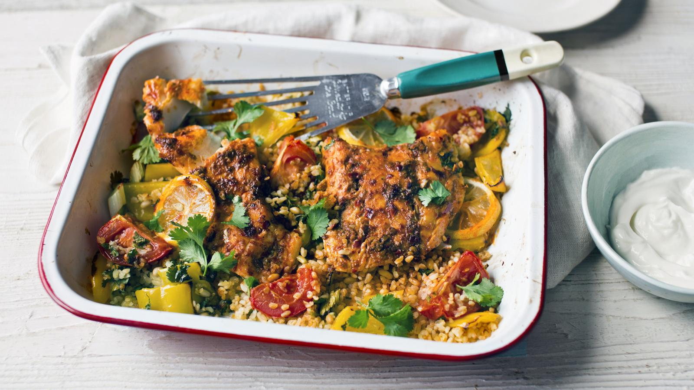

Fish, Bulgur Wheat and Harissa Bake

Oven baked fish with bulgur wheat and harissa.
Ingredients
- 2 large tomatoes, quartered
- 1 sweet pepper, deseeded and cut into 2cm chunks
- 100g bulgur wheat
- 25g pine nuts
- 1 lemon
- Bunch of spring onions
- Bunch of coriander
- 2 cod fillets
- 2 tsp harissa paste
- Freshly ground black pepper
- Tenderstem brocolli
Steps
- Pre heat the oven to 200c fan.
- Add tomato and peppers to large roasting tin. Add 1 tbsp of olive oil and mix well. Season with black pepper and bake for 15-20 minutes.
- Roughly chop coriander. Slice spring onions. Toast pine nuts in a dry pan.
- Add bulgur wheat to small boil and cover with boiling water. Leave for 5 minutes, then drain.
- Add coriander, spring onions, pine nuts and bulgur wheat to roasting tin. Add juice of half a lemon, black pepper and mix well.
- Create 2 gaps in the bulgur mixture to place your fish. Top each fillet with 1tbsp of harissa, spread evenly over the fish, before adding a slice of lemon.
- Return roasting tin to the oven for 15-20 minutes.
- While fish is cooking, steam brocolli.
- Divide the fish and bulgur mixture between plates, with additional coriander and lemon. Serve with brocolli.
Back to Recipes